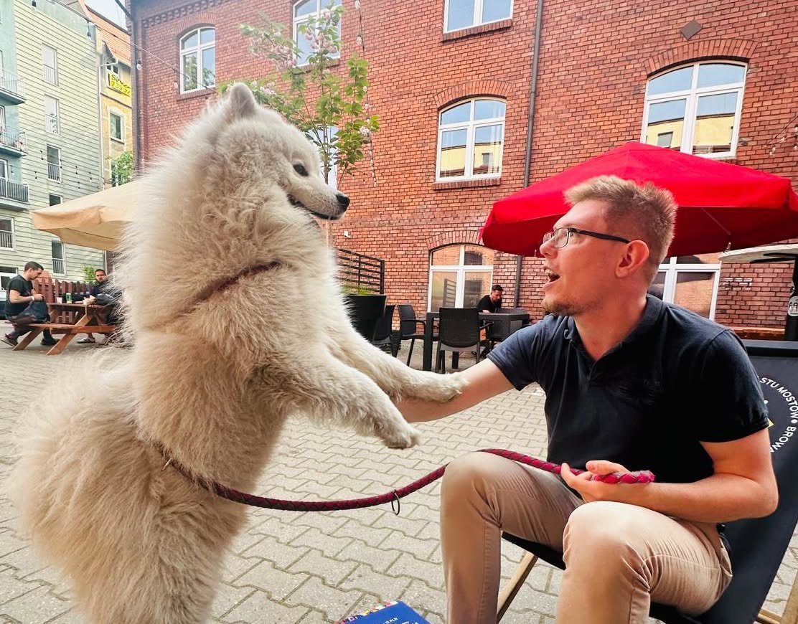

Senior postdoc at TU Wien · Assistant professor at the University of Wrocław
I lead the FWF project FINGO at TU Wien and am an assistant professor at the University of Wrocław (currently on a 20% workload). Before taking up my full-time position in Wrocław, I defended my PhD thesis at TU Dresden under the main supervision of Sebastian Rudolph; before that, I studied in the Parisian Master of Research in Computer Science at ENS Paris-Saclay under the supervision of Stéphane Demri.
I am a logician working in applied dendrology. Most of my current research concerns the use of trees, cacti and flowers in finite-model reasoning for dynamic logics (extensions of PDL, the modal μ-calculus, and more). More broadly, I am interested in finite model theory and the theory of computation.

The new version of this page is finally out.
Until the end of February 2027, I am declining all reviewing invitations. Sorry! Over the last two years I reviewed at least four times as many papers as I published, so it seems fair to spend the next few months on actual research.
Mikołaj Swoboda is now officially my PhD student. One of my biggest achievements so far :)
I am happy to announce that Ian Pratt-Hartmann and I will give a five-day course on decidable fragments of first-order logic at ESSLLI 2026, the 37th European Summer School in Logic, Language and Information. Course page and slides.
I was awarded a three-year FWF ESPRIT grant in Vienna for my project FINGO: Finite Graph Operating Automata Meet Dynamic Logics, expected to start on 1 April 2026. The project investigates the finite satisfiability problem for extensions of dynamic logics, such as PDL and the μ-calculus. A short project summary is available here. Feel free to contact me if you are interested in collaborating!
I successfully co-organized DL Workshop 2025 in Opole and was elected to the DL Workshop Steering Committee.
For the past two years I held a teaching-heavy position and spent much of my time reviewing papers. Since FINGO started in April 2026, I have been fully active in research again.